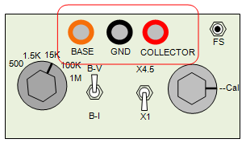
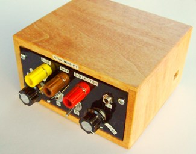

The
GND binding post is the reference
point for all circuit traces. Both the Collector voltage and Base step
generator currents return to this point. If your computer is plugged
into an AC power outlet, then
GND is also earth ground. Circuits with
earth grounds through AC power outlets should be disconnected if nodes
other than ground are used as a reference
GND node. Do not connect to
powered circuits and make sure all energy storage devices, such as
capacitors and batteries, are discharged or removed before connecting a
curve tracer. Safety First!
The
COLLECTOR connects to the test node of a circuit or device that is
to be characterized with respect to
GND. The
COLLECTOR binding post
connects to the collector sweep voltage source through a series limit
resistor (set with the rotary switch). It also connects to a voltage
follower amplifier that is part of the measurment system. Attaching the
COLLECTOR to a voltage greater than +18V or -18V could damage the
amplifier.
The
BASE connects
to a step generator that provides current
from +200uA to -200uA or voltage from +10V to -10V. The current or
voltage is constant until programmed to a new value. The resolution is
from the 12-bit DAC which has 4095 steps. The current changes
9.8nA/step and the
voltage changes 4.88mV/step. The step generator connects to the control
node of the device or circuit under test.

The USB connector is located on the right side of the curve tracer box.
A mini-USB-B to USB-A cable connector attaches the Mini-CT to a Windows
operating system computer. Mini-CT has been tested on XP, Vista,
Windows-7 and Windows-8 computers. Mini-CT requires a specical version to display correctly with
Linux Wine.
Main